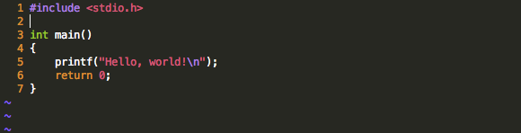
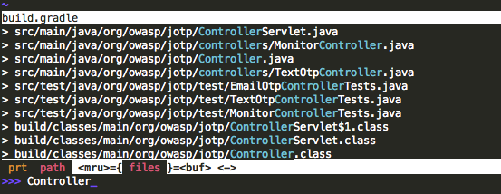

I've started to use Sublime Text at work and I have to admit: I like it. It's quick, extensible, and has a number of features that make editing code a snap (everyones' favorite on the Internet appears to be Ctrl-D, but I personally can't get enough of the "Fuzzy Find" feature. It even supports "Vintage" mode - a feature that allows a subset of Vim commands. That said, I still find myself repeatedly returning to Vim for a few reasons:
In its default state, Vim is pretty hideous and hard to use (no syntax highlighting, no automatic indenting, etc, etc). With a few tweaks, however, it can actually be quite beautiful and even reminiscent of Sublime Text.
This nifty little plugin adds a "fuzzy find" feature to your Vim install. The download and installation instructions can be found, here. While you can choose where you would like to extract the plugin files on your own computer, this tutorial assumes that they are located in, ~/.vim/bundle.
Add the following lines to your .vimrc file. Note that this subset doesn't include configuration for other plugins and features, or account for your own personal preferences (eg. I like my tab space to be set to 4).
set ai
set ts=4
set number
set hlsearch
set runtimepath^=~/.vim/bundle/ctrlp.vim
set shiftwidth=4
set tabstop=4
filetype plugin indent on
syntax on
If all goes well, source files opened with Vim from the terminal should look very Sublime Text-esque:

And with the ctrlp plugin, finding files in and under your current directory is a snap:
